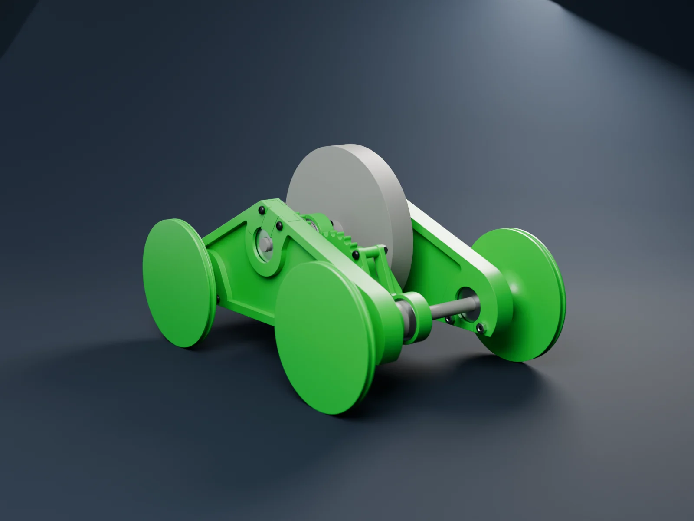

FLYWHEEL CAR - If you're not first, you're last

A design-class competition asked teams to build a car that would lose a race down a track. The caveat was that the car must only be propelled by gravity, and not come to a stop before the finish line. There were no timing devices allowed, and teams were not permitted to use any form of battery or logic boards.
Since the car's total energy was fixed by its starting height, the strategy was to store energy rather than dissipate it: shifting translational kinetic energy into rotational kinetic energy held in high-inertia rotating bodies. Moment of inertia was straightforward to maximize with large, disk-like wheels, but angular velocity — the dominant term, energy proportional to its square, is normally locked to the car's speed. The solution was a gear train driving a high-inertia flywheel at a large multiple of wheel speed, letting the car bank energy like a battery instead of bleeding energy off and risking total stoppage like most other solutions would.
Great competition premise: build a gravity-powered car that loses the race. Slowest car down the track wins — but it still has to cross the finish line. No timers, no microcontrollers, no cheating.
My thinking: ignoring friction, and all other things you are NOT supposed to ignore, the energy budget is effectively locked the moment the car sits at the top of the ramp. So instead of burning energy off with friction, why not stash it somewhere? Enter the heavy spinning body, or as industry pros like me call it: a flywheel. Angular kinetic energy scales with the square of spin speed, so I MacGyvered up a big chunky puck-like thing to spin far faster than the wheels using a gear train I designed on TinkerCAD of all places. The car siphons its own speed into a spinning battery and crawls across the line in last and not so fast.